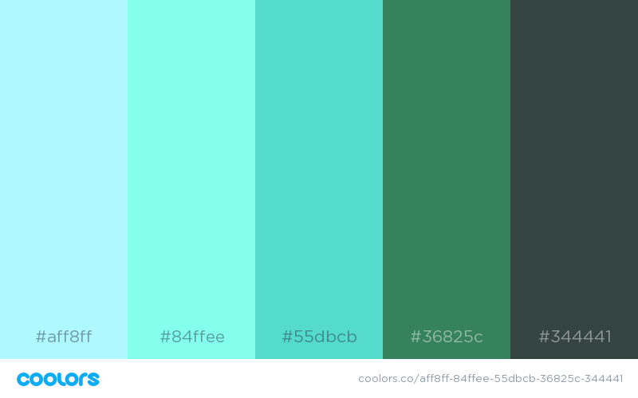

Color Scheme

I wanted to use some more earth and sky inspred tones to resemble the more outdoors and naturalized/minimalist theme of the website.
I selected these colors thinking they would give another color variation and vibrance without beign too distracting from the central website purpose.